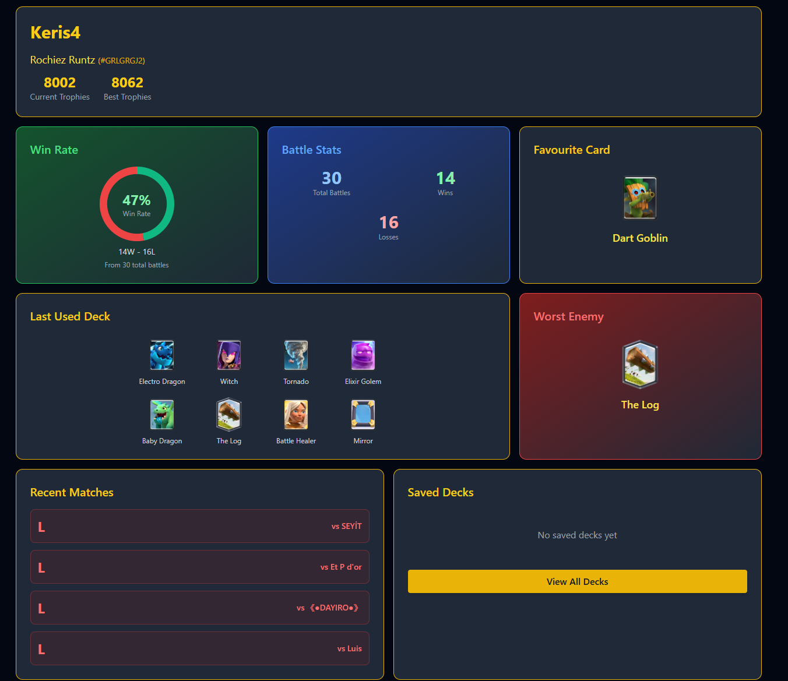
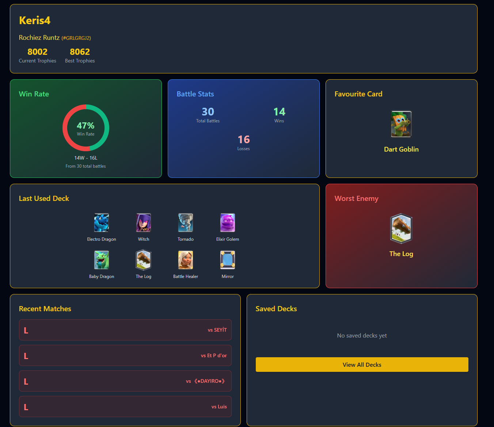

Eoin Curtis
Computational Social Science Student | Full-Stack Developer | System Administrator
About Me
3rd-year Computational Social Science student at University College Dublin with a strong technical foundation across Mathematics, Statistics, Economics, and Sociology. Full-stack developer specializing in backend engineering with Python and Golang, and experienced in building robust frontend applications with React. Skilled in cloud deployment, container orchestration, and system administration. Recognized by Microsoft, the CSO, and UCD for technical innovation, applied research, and impactful technical contributions.
Work Experience
Software Engineer Intern (Upcoming)
- Azure Hyper Scale Network team
- Working on Hardware and Software Network infrastructure
- Focus on Networking, Encryption, and Security
System Administrator
- Leading migration of Netsoc's infrastructure to new server environment to improve reliability and maintainability
- Designing internal automation tools and workflows to streamline system administration
- Developing member hosting platform for easy deployment and management of websites
Programming Instructor
- Led summer programming camp teaching Python, HTML, and CSS to ~15 students
- Guided projects including games, text adventures, and personal websites
Full Stack Developer
- Engineered full-stack application (React + Tailwind + Flask) showcased to thousands at UCD Festival
- Integrated PxStat and OpenAI APIs to automate insights from CSO data
- Collaborated with CSO Head of Data Science, presenting technical insights and outcomes
- Maintained 100% uptime under live event traffic by managing backend stability and monitoring
Featured Projects
Asteroid Predictor
Developed a full-stack web app using the NASA API to visualize real asteroid trajectories in 3D with Three.js. Built asynchronous FastAPI endpoints with MySQL caching to optimize data retrieval and API performance. Integrated the OpenAI API to generate AI-driven asteroid reports with interactive graphs in new browser tabs.
Spotify Playlist Automator
Built a backend service to automate playlist generation based on users' last 50 listened songs. Utilized FastAPI and Asyncio for asynchronous processing, improving performance and responsiveness. Integrated with Spotify API to fetch and process user data securely and efficiently.
 

Clash Royale Deck Builder
Developed a web app to create decks for Clash Royale with user authentication and a personalized dashboard. Built a Python API crawler to enrich game data not provided by the official API. Implemented a conditional probability-based deck-building algorithm using weighted probabilities. Deployed on Ubuntu with Nginx, implementing monitoring and debugging for stability.
CSO Data Insights Platform
Engineered full-stack application (React + Tailwind + Flask) showcased to thousands at UCD Festival. Integrated PxStat and OpenAI APIs to automate insights from CSO data. Collaborated with the CSO Head of Data Science, presenting technical insights and outcomes that attracted professional interest. Maintained 100% uptime under live event traffic.
Technical Skills
Languages
Python, Golang, TypeScript, JavaScript, HTML, CSS, SQL
Frameworks & Libraries
React, Flask, FastAPI, Pandas, NumPy, Matplotlib, scikit-learn
Developer Tools
Git, Docker, Nginx, Linux, Vite
Backend Development
Node.js, Python, Database Design, API Integration
Cloud & DevOps
Container Orchestration, System Administration, Deployment
Databases
SQLite, MySQL, SQL, Database Architecture
Achievements
Placed 4th out of 50 teams (200+ participants) with the Asteroid Predictor project - a full-stack web app using NASA API, Three.js 3D visualization, and AI-driven insights.
Learn More →Collaborated with the CSO Head of Data Science to present a full-stack application integrating PxStat and OpenAI APIs for automated data insights.
Learn More →Project showcased to thousands at UCD Festival, maintaining 100% uptime under live event traffic through robust backend monitoring.
Learn More →Runner up for technical excellence at the Data4Good Festival in Berlin, demonstrating innovative approaches to data-driven social impact.
Learn More →Advanced to quarter finals in UCD Robo-Rugby competition, showcasing robotics programming and competitive problem-solving skills.
Learn More →Elected by peers to represent Stage 2 Computational Social Science students, bridging communication between students and faculty.
Learn More →Get In Touch
Interested in collaborating or have a question? Feel free to reach out!